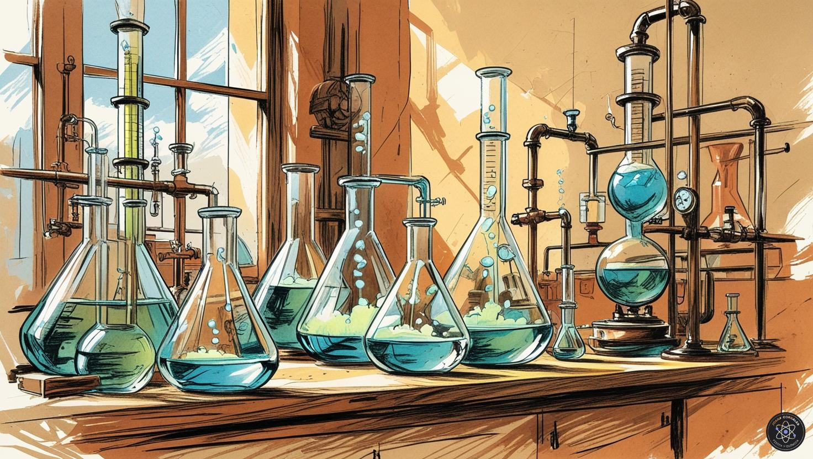

Estos apuntes reúnen una selección de conceptos fundamentales de Química necesarios para afrontar el estudio de 2.º de Bachillerato.
Comenzaremos con la descripción de la materia y los átomos, las fórmulas empíricas y moleculares y las leyes de los gases.
A continuación, estudiaremos las disoluciones, incluyendo su preparación y los procedimientos utilizados para realizar diluciones.
También repasaremos las reacciones químicas, su clasificación y los cambios energéticos asociados, junto con la estequiometría y la resolución de problemas mediante cálculos en masa, volumen y disoluciones.
Finalmente, abordaremos algunos aspectos esenciales del trabajo experimental: las normas de seguridad en el laboratorio, el material de laboratorio y la interpretación de los pictogramas de riesgo químico.

Texto propio generado con NotebookLM.